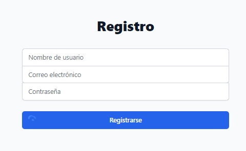
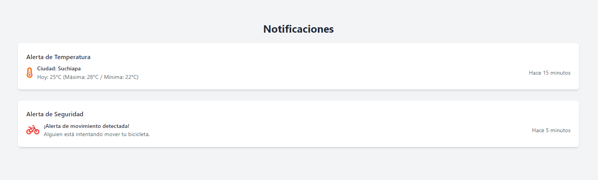
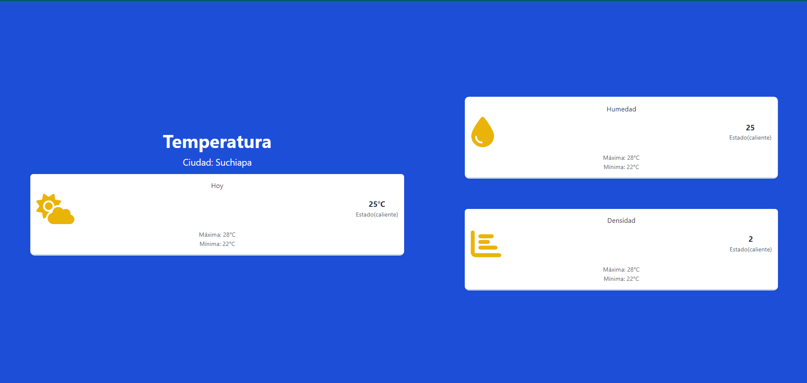

1

Cómo obtener la aplicación
Descubre cómo puedes obtener la aplicación Bike Carrier para empezar a disfrutar de todas sus funcionalidades.

2
Registro de usuario
Aprende cómo puedes registrarte en la aplicación para comenzar a usarla y aprovechar todas sus características.

3
Recepción de notificaciones
Verás una confirmación cuando tu bicicleta quede correctamente anclada después de un viaje y advertencias en caso de robo.

4
Visualización de la temperatura
Obtén información en tiempo real sobre la temperatura ambiente para proteger tu bicicleta de condiciones climáticas extremas.